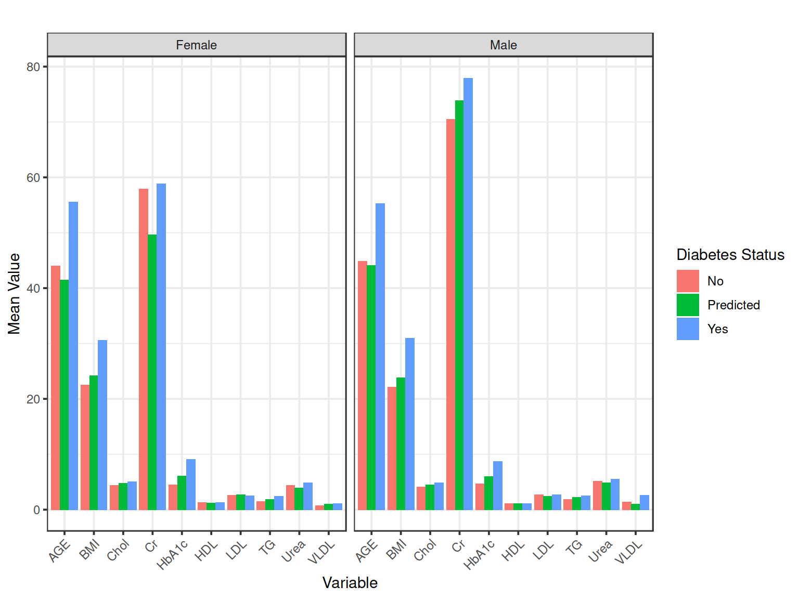
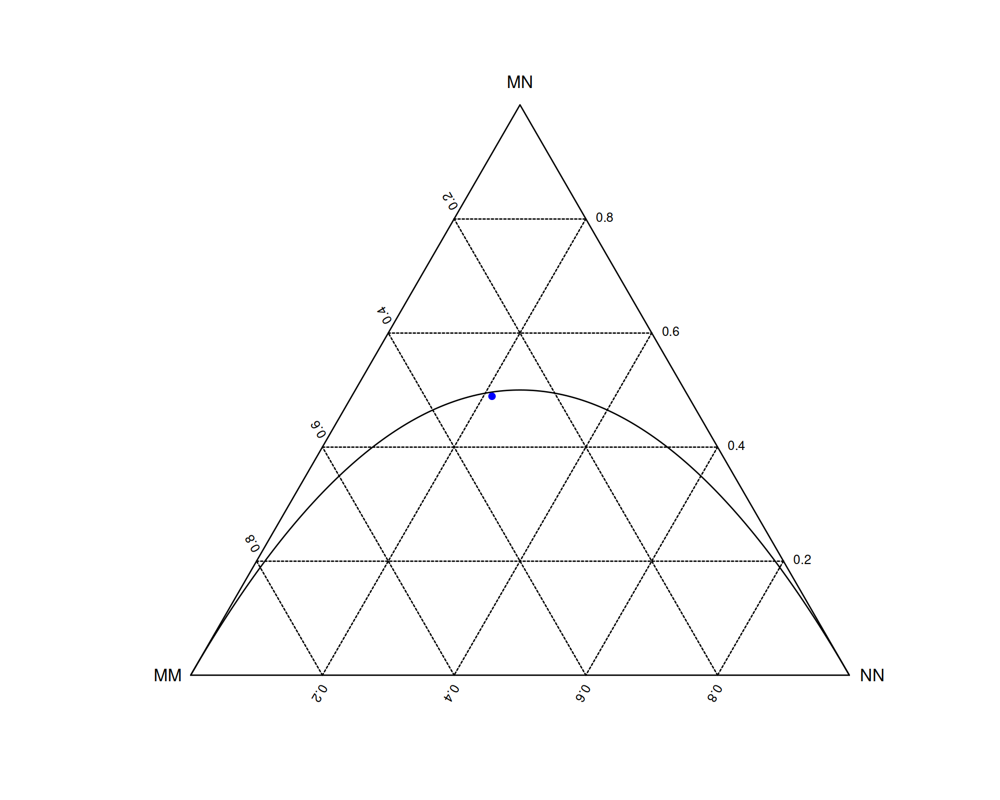
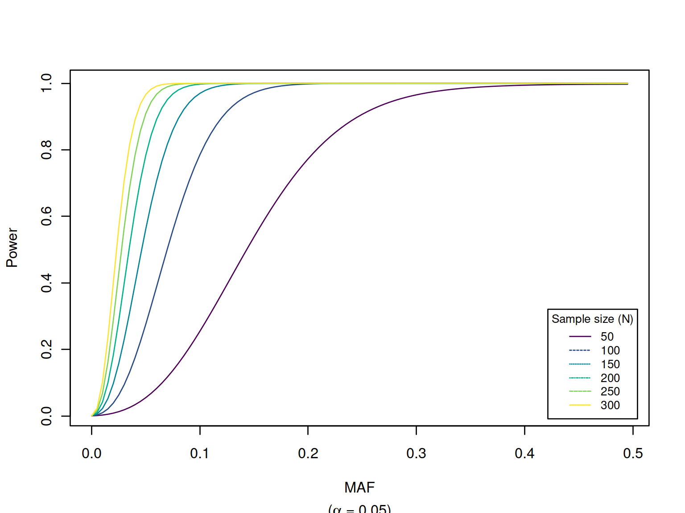

pkgs <- c("EnsDb.Hsapiens.v75","ensembldb","GMMAT","HardyWeinberg","MCMCglmm","SNPassoc","biomaRt",
"gap","gap.datasets","haplo.stats","powerEQTL","R2jags","regress",
"dplyr","ggplot2","httr","jsonlite","kableExtra","knitr","tidyr")
has_pkg <- function(x) requireNamespace(x, quietly = TRUE)
installed <- pkgs[vapply(pkgs, has_pkg, logical(1))]
missing <- setdiff(pkgs, installed)
if (length(missing)) {
message("Missing packages: ", paste(missing, collapse = ", "))
}
invisible(lapply(installed, function(p)
suppressMessages(library(p, character.only = TRUE))
))
sys_options <- options()
new_options <- options(digits=2)This is a companion to Henry-Stewart talk by Zhao (2026, <doi:10.69645/FRFQ9519>), which gathers information, metadata and scripts to showcase modern genetic analysis – ranging from testing of polymorphic variant(s) for Hardy-Weinberg equilibrium, association with traits using genetic and statistical models, Bayesian implementation, power calculation in study design, and genetic annotation. It also covers R integration with the Linux environment, GitHub, package creation and web applications. The earlier version by Zhao (2009, <doi:10.69645/DCRY5578>) provides a brief introduction to these topics.
It is adapted from pQTLdata, https://jinghuazhao.github.io/pQTLdata/.
We start with several ways of printting a Hello, world! message.
R can be started from either command line interface (CLI) or a graphical user interface (GUI),
print("Hello, world!\n")
#> [1] "Hello, world!\n"As it is very powerful, we more often embed R in a Linux script as follows,
export message="Hello, world!"
echo "print('$message')" > hello.R
R CMD BATCH hello.R
R --no-save -q < hello.R
R --no-save -q <<END
message <- Sys.getenv("message"); print(message)
source("hello.R")
END
echo ${message} | \
Rscript -e '
message <- scan("stdin", what="", sep="\n", quiet=TRUE);
write.table(message, col.names=FALSE, row.names=FALSE,
quote=FALSE)
' | \
cat
rm hello.*
#> > print('Hello, world!')
#> [1] "Hello, world!"
#> >
#> > message <- Sys.getenv("message"); print(message)
#> [1] "Hello, world!"
#> > source("hello.R")
#> [1] "Hello, world!"
#> >
#> Hello, world!where the backslash (\) is for line continuation.
As shown in the example, one can take advantage of powerful data handling facilities in the Linux environment, through either Linux itself or software followed by their counterparts in R with options to feed back to the Linux envornment again for further use.
Moreover, R could be an integrated component of a workflow, e.g., as curated in pQTLtools involving snakemake, https://jinghuazhao.github.io/pQTLtools/articles/snakemake.html.
Basic data manipulation of the iris data includes
class(iris)
#> [1] "data.frame"
dim(iris)
#> [1] 150 5
str(iris)
#> 'data.frame': 150 obs. of 5 variables:
#> $ Sepal.Length: num 5.1 4.9 4.7 4.6 5 5.4 4.6 5 4.4 4.9 ...
#> $ Sepal.Width : num 3.5 3 3.2 3.1 3.6 3.9 3.4 3.4 2.9 3.1 ...
#> $ Petal.Length: num 1.4 1.4 1.3 1.5 1.4 1.7 1.4 1.5 1.4 1.5 ...
#> $ Petal.Width : num 0.2 0.2 0.2 0.2 0.2 0.4 0.3 0.2 0.2 0.1 ...
#> $ Species : Factor w/ 3 levels "setosa","versicolor",..: 1 1 1 1 1 1 1 1 1 1 ...
head(iris,1)
#> Sepal.Length Sepal.Width Petal.Length Petal.Width Species
#> 1 5.1 3.5 1.4 0.2 setosa
tail(iris,1)
#> Sepal.Length Sepal.Width Petal.Length Petal.Width Species
#> 150 5.9 3 5.1 1.8 virginicaWe would like to highlight two types of operators,
::) is useful since user executes command from a particular package without loading it, which is usually faster.|>) and contributed (%>%) pipe operators which enable a chained of operations, the latter popularized from R magrittr and dplyr packagesoptions(new_options)
data(diabetes,package="gaawr2")
mean_values <- diabetes %>%
dplyr::filter(CLASS %in% c("Y", "N", "P")) %>%
dplyr::mutate(
Gender = dplyr::recode(Gender, "F" = "Female", "M" = "Male"),
CLASS = dplyr::recode(CLASS, "Y" = "Yes", "N" = "No", "P" = "Predicted")
) %>%
dplyr::group_by(CLASS, Gender) %>%
dplyr::select(AGE:BMI) %>%
dplyr::summarize(dplyr::across(dplyr::everything(), \(x) mean(x, na.rm = TRUE)))
#> Adding missing grouping variables: `CLASS`, `Gender`
#> `summarise()` has regrouped the output.
kableExtra::kbl(mean_values,caption="Mean value by gender and diabetes category") %>%
kableExtra::kable_styling(bootstrap_options = c("striped", "hover"))| CLASS | Gender | AGE | Urea | Cr | HbA1c | Chol | TG | HDL | LDL | VLDL | BMI |
|---|---|---|---|---|---|---|---|---|---|---|---|
| No | Female | 43.98438 | 4.384375 | 57.92188 | 4.501563 | 4.350000 | 1.484375 | 1.326563 | 2.587500 | 0.6906250 | 22.50781 |
| No | Male | 44.81579 | 5.142105 | 70.47368 | 4.636842 | 4.126316 | 1.860526 | 1.068421 | 2.684210 | 1.3736842 | 22.09211 |
| Predicted | Female | 41.47059 | 3.876471 | 49.58824 | 6.058823 | 4.747059 | 1.876471 | 1.179412 | 2.655882 | 0.9823529 | 24.17647 |
| Predicted | Male | 44.13889 | 4.811111 | 73.86111 | 5.977778 | 4.500000 | 2.244444 | 1.102778 | 2.416667 | 0.9833333 | 23.81944 |
| Yes | Female | 55.56780 | 4.840678 | 58.86158 | 9.104407 | 5.079096 | 2.426554 | 1.304237 | 2.526441 | 1.1115819 | 30.61486 |
| Yes | Male | 55.25514 | 5.491858 | 77.91975 | 8.719547 | 4.866502 | 2.476358 | 1.136420 | 2.679383 | 2.6207819 | 30.92420 |
mean_values_long <- mean_values %>%
tidyr::pivot_longer(
cols = AGE:BMI,
names_to = "Variable",
values_to = "Mean_Value"
)
ggplot2::ggplot(mean_values_long,
ggplot2::aes(x = Variable, y = Mean_Value, fill = CLASS)) +
ggplot2::geom_col(position = ggplot2::position_dodge()) +
ggplot2::facet_wrap(~ Gender) +
ggplot2::labs(
title = "",
x = "Variable",
y = "Mean Value",
fill = "Diabetes Status" # Modified legend title for clarity
) +
ggplot2::theme_bw() +
ggplot2::theme(axis.text.x = ggplot2::element_text(angle = 45, hjust = 1))
Figure 2.1: Mean values by gender and diabetes category
options(sys_options)We see higher mean age and HbA1c values in the “Yes” diabetes group as well as noticeable differences in BMI, which align with the known associations between these variables and diabetes.
The Comprehensive R Archive Network (CRAN) host and Bioconductor host many fined-tuned user-contributed packages, their installation is furnished through
install.packages() which is a standard way to install from CRANBiocManager::install() which is the current approach to install package from the Bioconductor project.devtools::install_github(cran/package-name), e.g., kinship and GenABEL.Topics in this section underpins large-scale genome data analysis such as Genomewide association study (GWAS) and vary from those classic models such as mets for twin data to heavily featured in candidate gene studies, such as Hardy-Weinberg equilirium (HWE), to GWAS such as various types of association statistics, QQ/Manhattan/local association plots.
There has been a lot of interests in machine learning (ML), artificial language (AI), including deep learning, just to add one more acronym, the bulk of which is also readily available.
We set to run through the package for HWE. Three data sources are used: MN blood group in the documentation, a chromosome X SNP and a HLA/DQR,
# MN blood group
SNP <- c(MM = 298, MN = 489, NN = 213)
HardyWeinberg::maf(SNP)
#> N
#> 0.4575
HardyWeinberg::HWTernaryPlot(SNP,region=0,grid=TRUE,markercol="blue")
Figure 3.1: SNP ternary plot
HardyWeinberg::HWChisq(SNP, cc = 0, verbose = TRUE)
#> Chi-square test for Hardy-Weinberg equilibrium (autosomal)
#> Chi2 = 0.2215 DF = 1 p-value = 0.6379
#> f = 0.0149 Ho = 0.4890 He = 0.4964
# Chromosome X
xSNP <- c(A=10, B=20, AA=30, AB=20, BB=10)
HardyWeinberg::HWChisq(xSNP,cc=0,x.linked=TRUE,verbose=TRUE)
#> Chi-square test for Hardy-Weinberg equilibrium (X-chromosomal)
#> Chi2 = 14.8611 DF = 2 p-value = 0.0006
# HLA/DQR
DQR <- gap.datasets::hla[,3:4]
a1 <- DQR[1]
a2 <- DQR[2]
GenotypeCounts <- HardyWeinberg::AllelesToTriangular(a1,a2)
kableExtra::kbl(GenotypeCounts,caption="Genotype distribution of DQR") %>%
kableExtra::kable_styling(bootstrap_options = c("striped", "hover"))| A0 | A1 | A10 | A11 | A12 | A13 | A14 | A15 | A16 | A17 | A18 | A19 | A2 | A20 | A21 | A22 | A23 | A24 | A25 | A3 | A4 | A6 | A7 | A8 | A9 | |
|---|---|---|---|---|---|---|---|---|---|---|---|---|---|---|---|---|---|---|---|---|---|---|---|---|---|
| A0 | 1 | 0 | 0 | 0 | 0 | 0 | 0 | 0 | 0 | 0 | 0 | 0 | 0 | 0 | 0 | 0 | 0 | 0 | 0 | 0 | 0 | 0 | 0 | 0 | 0 |
| A1 | 0 | 2 | 0 | 0 | 0 | 0 | 0 | 0 | 0 | 0 | 0 | 0 | 0 | 0 | 0 | 0 | 0 | 0 | 0 | 0 | 0 | 0 | 0 | 0 | 0 |
| A10 | 0 | 2 | 0 | 0 | 0 | 0 | 0 | 0 | 0 | 0 | 0 | 0 | 0 | 0 | 0 | 0 | 0 | 0 | 0 | 0 | 0 | 0 | 0 | 0 | 0 |
| A11 | 0 | 0 | 0 | 0 | 0 | 0 | 0 | 0 | 0 | 0 | 0 | 0 | 0 | 0 | 0 | 0 | 0 | 0 | 0 | 0 | 0 | 0 | 0 | 0 | 0 |
| A12 | 0 | 0 | 0 | 0 | 0 | 0 | 0 | 0 | 0 | 0 | 0 | 0 | 0 | 0 | 0 | 0 | 0 | 0 | 0 | 0 | 0 | 0 | 0 | 0 | 0 |
| A13 | 0 | 0 | 0 | 0 | 0 | 1 | 0 | 0 | 0 | 0 | 0 | 0 | 0 | 0 | 0 | 0 | 0 | 0 | 0 | 0 | 0 | 0 | 0 | 0 | 0 |
| A14 | 0 | 3 | 2 | 0 | 2 | 1 | 2 | 0 | 0 | 0 | 0 | 0 | 0 | 0 | 0 | 0 | 0 | 0 | 0 | 0 | 0 | 0 | 0 | 0 | 0 |
| A15 | 0 | 3 | 0 | 0 | 0 | 0 | 0 | 0 | 0 | 0 | 0 | 0 | 0 | 0 | 0 | 0 | 0 | 0 | 0 | 0 | 0 | 0 | 0 | 0 | 0 |
| A16 | 0 | 1 | 1 | 0 | 0 | 0 | 1 | 1 | 0 | 0 | 0 | 0 | 0 | 0 | 0 | 0 | 0 | 0 | 0 | 0 | 0 | 0 | 0 | 0 | 0 |
| A17 | 0 | 0 | 1 | 0 | 1 | 2 | 1 | 0 | 0 | 3 | 0 | 0 | 0 | 0 | 0 | 0 | 0 | 0 | 0 | 0 | 0 | 0 | 0 | 0 | 0 |
| A18 | 0 | 1 | 0 | 0 | 0 | 0 | 0 | 1 | 0 | 1 | 0 | 0 | 0 | 0 | 0 | 0 | 0 | 0 | 0 | 0 | 0 | 0 | 0 | 0 | 0 |
| A19 | 0 | 0 | 0 | 0 | 0 | 0 | 0 | 0 | 0 | 1 | 1 | 0 | 0 | 0 | 0 | 0 | 0 | 0 | 0 | 0 | 0 | 0 | 0 | 0 | 0 |
| A2 | 0 | 0 | 0 | 0 | 0 | 0 | 1 | 0 | 0 | 0 | 0 | 0 | 0 | 0 | 0 | 0 | 0 | 0 | 0 | 0 | 0 | 0 | 0 | 0 | 0 |
| A20 | 0 | 0 | 0 | 0 | 0 | 0 | 0 | 0 | 1 | 0 | 0 | 0 | 0 | 0 | 0 | 0 | 0 | 0 | 0 | 0 | 0 | 0 | 0 | 0 | 0 |
| A21 | 0 | 3 | 0 | 0 | 0 | 0 | 1 | 0 | 1 | 0 | 0 | 0 | 0 | 0 | 0 | 0 | 0 | 0 | 0 | 0 | 0 | 0 | 0 | 0 | 0 |
| A22 | 0 | 13 | 3 | 0 | 0 | 1 | 3 | 0 | 0 | 4 | 0 | 1 | 0 | 1 | 2 | 5 | 0 | 0 | 0 | 0 | 0 | 0 | 0 | 0 | 0 |
| A23 | 0 | 0 | 0 | 0 | 0 | 0 | 0 | 0 | 0 | 0 | 0 | 0 | 0 | 0 | 0 | 1 | 0 | 0 | 0 | 0 | 0 | 0 | 0 | 0 | 0 |
| A24 | 0 | 1 | 0 | 0 | 0 | 0 | 0 | 0 | 0 | 2 | 0 | 0 | 0 | 0 | 0 | 0 | 0 | 0 | 0 | 0 | 0 | 0 | 0 | 0 | 0 |
| A25 | 0 | 0 | 1 | 0 | 0 | 0 | 0 | 0 | 0 | 0 | 0 | 0 | 0 | 0 | 0 | 0 | 0 | 0 | 0 | 0 | 0 | 0 | 0 | 0 | 0 |
| A3 | 0 | 1 | 0 | 0 | 0 | 0 | 0 | 0 | 0 | 0 | 0 | 0 | 1 | 0 | 0 | 3 | 1 | 0 | 0 | 1 | 0 | 0 | 0 | 0 | 0 |
| A4 | 0 | 3 | 3 | 0 | 2 | 0 | 3 | 0 | 1 | 2 | 1 | 0 | 1 | 1 | 3 | 8 | 0 | 1 | 0 | 3 | 4 | 0 | 0 | 0 | 0 |
| A6 | 0 | 6 | 0 | 0 | 1 | 0 | 3 | 0 | 0 | 3 | 1 | 0 | 0 | 0 | 2 | 7 | 1 | 0 | 0 | 0 | 11 | 7 | 0 | 0 | 0 |
| A7 | 0 | 0 | 0 | 0 | 0 | 0 | 0 | 0 | 0 | 1 | 0 | 0 | 0 | 0 | 0 | 0 | 0 | 0 | 0 | 1 | 2 | 0 | 1 | 0 | 0 |
| A8 | 0 | 3 | 1 | 0 | 1 | 0 | 5 | 0 | 0 | 1 | 1 | 0 | 0 | 0 | 0 | 9 | 2 | 0 | 0 | 1 | 4 | 2 | 1 | 2 | 0 |
| A9 | 0 | 8 | 2 | 1 | 0 | 2 | 3 | 0 | 0 | 5 | 2 | 0 | 0 | 0 | 3 | 15 | 1 | 0 | 0 | 1 | 7 | 10 | 1 | 4 | 2 |
HardyWeinberg::HWPerm.mult(GenotypeCounts,nperm=300)
#> Permutation test for Hardy-Weinberg equilibrium (autosomal).
#> 25 alleles detected.
#> Observed statistic: 1.461325e-84 300 permutations. p-value: 0.01
HardyWeinberg::HWStr(hla[,3:4],test="permutation",nperm=300)
#> 1 STRs detected.
#> STR N Nt MinorAF MajorAF Ho He Hp pval
#> 1 DQR.a1 271 25 0.001845018 0.1494465 0.8856089 0.9097643 2.654949 0.02666667The MN locus is seen to be close to the HWE line from the ternary plot. Only 300 permutations are done for the HLA/DQR data to illustrate.
The package implements procedures which are appropriate for candidate gene association analysis, under a variety of genetic models.
We first look at some meta-data, include HWE.
data(asthma, package = "SNPassoc")
str(asthma, list.len=8)
#> 'data.frame': 1578 obs. of 57 variables:
#> $ country : Factor w/ 10 levels "Australia","Belgium",..: 5 5 5 5 5 5 5 5 5 5 ...
#> $ gender : Factor w/ 2 levels "Females","Males": 2 2 2 1 1 1 1 2 1 1 ...
#> $ age : num 42.8 50.2 46.7 47.9 48.4 ...
#> $ bmi : num 20.1 24.7 27.7 33.3 25.2 ...
#> $ smoke : int 1 0 0 0 0 1 0 0 0 0 ...
#> $ casecontrol: int 0 0 0 0 1 0 0 0 0 0 ...
#> $ rs4490198 : Factor w/ 3 levels "AA","AG","GG": 3 3 3 2 2 2 3 2 2 2 ...
#> $ rs4849332 : Factor w/ 3 levels "GG","GT","TT": 3 2 3 2 1 2 3 3 2 1 ...
#> [list output truncated]
knitr::kable(asthma[1:3,1:8],caption="First three records & two SNPs")| country | gender | age | bmi | smoke | casecontrol | rs4490198 | rs4849332 |
|---|---|---|---|---|---|---|---|
| Germany | Males | 42.80630 | 20.14797 | 1 | 0 | GG | TT |
| Germany | Males | 50.22861 | 24.69136 | 0 | 0 | GG | GT |
| Germany | Males | 46.68857 | 27.73230 | 0 | 0 | GG | TT |
snpCols <- colnames(asthma)[6+(1:2)]
snps <- SNPassoc::setupSNP(data=asthma[snpCols], colSNPs=1:length(snpCols), sep="")
head(snps)
#> rs4490198 rs4849332
#> 1 G/G T/T
#> 2 G/G G/T
#> 3 G/G T/T
#> 4 A/G G/T
#> 5 A/G G/G
#> 6 A/G G/T
summary(snps, print=FALSE)
#> alleles major.allele.freq HWE missing (%)
#> rs4490198 A/G 59.2 0.174133 0.6
#> rs4849332 G/T 61.8 0.522060 0.1
lapply(snps, head)
#> $rs4490198
#> [1] G/G G/G G/G A/G A/G A/G
#> Genotypes: A/A A/G G/G
#> Alleles: G A
#>
#> $rs4849332
#> [1] T/T G/T T/T G/T G/G G/T
#> Genotypes: G/G G/T T/T
#> Alleles: T G
lapply(snps, summary)
#> $rs4490198
#> Genotypes:
#> frequency percentage
#> A/A 562 35.84184
#> A/G 731 46.61990
#> G/G 275 17.53827
#> NA's 10
#>
#> Alleles:
#> frequency percentage
#> G 1281 40.84821
#> A 1855 59.15179
#> NA's 20
#>
#> HWE (p value): 0.1741325
#>
#> $rs4849332
#> Genotypes:
#> frequency percentage
#> G/G 609 38.61763
#> G/T 732 46.41725
#> T/T 236 14.96512
#> NA's 1
#>
#> Alleles:
#> frequency percentage
#> T 1204 38.17375
#> G 1950 61.82625
#> NA's 2
#>
#> HWE (p value): 0.5220596
SNPassoc::tableHWE(snps)
#> HWE (p value) flag
#> rs4490198 0.1741
#> rs4849332 0.5221where variable snpCols skips six columns of non-SNP data for two SNPs.
We then turn to genetic models for the first one,
asthma.snps <- asthma %>%
dplyr::rename(cc=casecontrol) %>%
SNPassoc::setupSNP(colSNPs=(6+1):ncol(.), sep="")
# Model 1: Simple SNP association with BMI
SNPassoc::association(bmi ~ rs4490198, data = asthma.snps)
#>
#> SNP: rs4490198 adjusted by:
#> n me se dif lower upper p-value AIC
#> Codominant
#> A/A 558 25.54 0.1764 0.00000 0.8847 9015
#> A/G 725 25.56 0.1741 0.02169 -0.4614 0.5048
#> G/G 273 25.41 0.2369 -0.12986 -0.7634 0.5037
#> Dominant
#> A/A 558 25.54 0.1764 0.00000 0.9319 9013
#> A/G-G/G 998 25.52 0.1421 -0.01977 -0.4731 0.4336
#> Recessive
#> A/A-A/G 1283 25.55 0.1247 0.00000 0.6261 9013
#> G/G 273 25.41 0.2369 -0.14212 -0.7137 0.4294
#> Overdominant
#> A/A-G/G 831 25.50 0.1417 0.00000 0.7723 9013
#> A/G 725 25.56 0.1741 0.06435 -0.3715 0.5002
#> log-Additive
#> 0,1,2 -0.05016 -0.3575 0.2571 0.7491 9013
# Model 2: SNP association with case-control status
SNPassoc::association(cc ~ rs4490198, data = asthma.snps)
#>
#> SNP: rs4490198 adjusted by:
#> 0 % 1 % OR lower upper p-value AIC
#> Codominant
#> A/A 449 36.5 113 33.4 1.00 0.5277 1639
#> A/G 565 45.9 166 49.1 1.17 0.89 1.53
#> G/G 216 17.6 59 17.5 1.09 0.76 1.55
#> Dominant
#> A/A 449 36.5 113 33.4 1.00 0.2950 1638
#> A/G-G/G 781 63.5 225 66.6 1.14 0.89 1.48
#> Recessive
#> A/A-A/G 1014 82.4 279 82.5 1.00 0.9640 1639
#> G/G 216 17.6 59 17.5 0.99 0.72 1.36
#> Overdominant
#> A/A-G/G 665 54.1 172 50.9 1.00 0.3000 1638
#> A/G 565 45.9 166 49.1 1.14 0.89 1.45
#> log-Additive
#> 0,1,2 1230 78.4 338 21.6 1.06 0.90 1.26 0.4951 1638
# Model 3: SNP association with covariates (country and smoke)
SNPassoc::association(cc ~ rs4490198 + country + smoke, data = asthma.snps)
#>
#> SNP: rs4490198 adjusted by: country smoke
#> 0 % 1 % OR lower upper p-value AIC
#> Codominant
#> A/A 448 36.6 112 33.2 1.00 0.5414 1403
#> A/G 563 46.0 166 49.3 1.18 0.88 1.59
#> G/G 213 17.4 59 17.5 1.08 0.73 1.60
#> Dominant
#> A/A 448 36.6 112 33.2 1.00 0.3172 1401
#> A/G-G/G 776 63.4 225 66.8 1.15 0.87 1.52
#> Recessive
#> A/A-A/G 1011 82.6 278 82.5 1.00 0.9091 1402
#> G/G 213 17.4 59 17.5 0.98 0.69 1.39
#> Overdominant
#> A/A-G/G 661 54.0 171 50.7 1.00 0.2983 1401
#> A/G 563 46.0 166 49.3 1.15 0.88 1.50
#> log-Additive
#> 0,1,2 1224 78.4 337 21.6 1.06 0.88 1.28 0.5382 1402
# Model 4: SNP association with stratification by gender
SNPassoc::association(cc ~ rs4490198 + survival::strata(gender), data = asthma.snps)
#>
#> SNP: rs4490198 adjusted by: survival::strata(gender)
#> 0 % 1 % OR lower upper p-value AIC
#> Codominant
#> A/A 449 36.5 113 33.4 1.00 0.5523 1630
#> A/G 565 45.9 166 49.1 1.16 0.89 1.52
#> G/G 216 17.6 59 17.5 1.10 0.77 1.57
#> Dominant
#> A/A 449 36.5 113 33.4 1.00 0.2948 1629
#> A/G-G/G 781 63.5 225 66.6 1.15 0.89 1.48
#> Recessive
#> A/A-A/G 1014 82.4 279 82.5 1.00 0.9417 1630
#> G/G 216 17.6 59 17.5 1.01 0.74 1.39
#> Overdominant
#> A/A-G/G 665 54.1 172 50.9 1.00 0.3435 1629
#> A/G 565 45.9 166 49.1 1.12 0.88 1.43
#> log-Additive
#> 0,1,2 1230 78.4 338 21.6 1.07 0.90 1.27 0.4546 1629
# Model 5: SNP association with subset (only Spain)
SNPassoc::association(cc ~ rs4490198, data = asthma.snps, subset = country == "Spain")
#>
#> SNP: rs4490198 adjusted by:
#> 0 % 1 % OR lower upper p-value AIC
#> Codominant
#> A/A 141 43.3 18 37.5 1.00 0.6257 291.7
#> A/G 145 44.5 22 45.8 1.19 0.61 2.31
#> G/G 40 12.3 8 16.7 1.57 0.63 3.87
#> Dominant
#> A/A 141 43.3 18 37.5 1.00 0.4494 290.1
#> A/G-G/G 185 56.7 30 62.5 1.27 0.68 2.37
#> Recessive
#> A/A-A/G 286 87.7 40 83.3 1.00 0.4104 290.0
#> G/G 40 12.3 8 16.7 1.43 0.62 3.27
#> Overdominant
#> A/A-G/G 181 55.5 26 54.2 1.00 0.8602 290.6
#> A/G 145 44.5 22 45.8 1.06 0.57 1.94
#> log-Additive
#> 0,1,2 326 87.2 48 12.8 1.24 0.80 1.91 0.3394 289.7
# Model 6: Interaction between SNP (dominant model) and smoking
SNPassoc::association(cc ~ SNPassoc::dominant(rs4490198) * factor(smoke), data = asthma.snps)
#>
#> SNP: SNPassoc::dominant(rs4490198 adjusted by:
#> Interaction
#> ---------------------
#> 0 OR lower upper 1 OR lower upper
#> A/A 293 84 1.00 NA NA 155 28 0.63 0.39 1.01
#> A/G-G/G 539 172 1.11 0.83 1.5 237 53 0.78 0.53 1.15
#>
#> p interaction: 0.71994
#>
#> factor(smoke) within SNPassoc::dominant(rs4490198
#> ---------------------
#> A/A
#> 0 1 OR lower upper
#> 0 293 84 1.00 NA NA
#> 1 155 28 0.63 0.39 1.01
#>
#> A/G-G/G
#> 0 1 OR lower upper
#> 0 539 172 1.0 NA NA
#> 1 237 53 0.7 0.5 0.99
#>
#> p trend: 0.71994
#>
#> SNPassoc::dominant(rs4490198 within factor(smoke)
#> ---------------------
#> 0
#> 0 1 OR lower upper
#> A/A 293 84 1.00 NA NA
#> A/G-G/G 539 172 1.11 0.83 1.5
#>
#> 1
#> 0 1 OR lower upper
#> A/A 155 28 1.00 NA NA
#> A/G-G/G 237 53 1.24 0.75 2.04
#>
#> p trend: 0.71994
# Model 7: Interaction between two SNPs (dominant model for rs4490198)
SNPassoc::association(cc ~ rs4490198 * factor(rs11123242), data = asthma.snps, model.interaction = "dominant")
#>
#> SNP: rs4490198 adjusted by:
#> Interaction
#> ---------------------
#> C/C OR lower upper C/T OR lower upper 0 1 T/T lower
#> A/A 448 113 1.00 NA NA 1 0 0.00 0.00 NA 0 0 NA NA
#> A/G-G/G 371 109 1.16 0.87 1.57 365 102 1.11 0.82 1.5 39 14 1.42 0.75
#> upper
#> A/A NA
#> A/G-G/G 2.71
#>
#> p interaction: 0.5126
#>
#> factor(rs11123242) within rs4490198
#> ---------------------
#> A/A
#> 0 1 OR lower upper
#> C/C 448 113 1 NA NA
#> C/T 1 0 0 0 NA
#> T/T 0 0 NA NA NA
#>
#> A/G-G/G
#> 0 1 OR lower upper
#> C/C 371 109 1.00 NA NA
#> C/T 365 102 0.95 0.70 1.29
#> T/T 39 14 1.22 0.64 2.33
#>
#> p trend: 0.5126
#>
#> rs4490198 within factor(rs11123242)
#> ---------------------
#> C/C
#> 0 1 OR lower upper
#> A/A 448 113 1.00 NA NA
#> A/G-G/G 371 109 1.16 0.87 1.57
#>
#> C/T
#> 0 1 OR lower upper
#> A/A 1 0 1 NA NA
#> A/G-G/G 365 102 NA 0 NA
#>
#> T/T
#> 0 1 OR lower upper
#> A/A 0 0 1 NA NA
#> A/G-G/G 39 14 NA NA NA
#>
#> p trend: 0.49958This package considers haplotype estimation using EM-algorithms and genetic association under a generalized linear model (GLM).
# Association with the first three SNPs
snpsH <- names(asthma.snps)[6+(1:3)]
genoH <- SNPassoc::make.geno(asthma.snps, snpsH)
em <- haplo.stats::haplo.em(genoH, locus.label = snpsH, miss.val = c(0, NA))
haplo_table <- with(em,cbind(haplotype,hap.prob))
knitr::kable(haplo_table,caption="Haplotypes of the first three SNPs")| rs4490198 | rs4849332 | rs1367179 | hap.prob |
|---|---|---|---|
| 1 | 1 | 1 | 0.0003813 |
| 1 | 1 | 2 | 0.5593910 |
| 1 | 2 | 1 | 0.0004027 |
| 1 | 2 | 2 | 0.0306653 |
| 2 | 1 | 1 | 0.0000000 |
| 2 | 1 | 2 | 0.0584815 |
| 2 | 2 | 1 | 0.1851431 |
| 2 | 2 | 2 | 0.1655351 |
modH <- haplo.stats::haplo.glm(cc ~ genoH, data=asthma.snps,
family="binomial",
locus.label=snpsH,
allele.lev=attributes(genoH)$unique.alleles,
control = haplo.stats::haplo.glm.control(haplo.freq.min=0.05))
modH
#>
#> Call: haplo.stats::haplo.glm(formula = cc ~ genoH, family = "binomial",
#> data = asthma.snps, locus.label = snpsH, control = haplo.stats::haplo.glm.control(haplo.freq.min = 0.05),
#> allele.lev = attributes(genoH)$unique.alleles)
#>
#> Coefficients:
#> (Intercept) genoH.6 genoH.7 genoH.8 genoH.rare
#> -1.322930 0.161274 0.083020 -0.027472 -0.191619
#>
#> Haplotypes:
#> rs4490198 rs4849332 rs1367179 hap.freq
#> genoH.6 G G G 0.058479
#> genoH.7 G T C 0.185124
#> genoH.8 G T G 0.165551
#> genoH.rare * * * 0.031456
#> haplo.base A G G 0.559391
#>
#> Degrees of Freedom: 1577 Total (i.e. Null); 1573 Residual
#>
#> Null Deviance: 1644.6
#> Residual Deviance: 1642.6
#> AIC: 1652.6
SNPassoc::intervals(modH)
#> freq or 95% C.I. P-val
#> AGG 0.5594 1.00 Reference haplotype
#> GGG 0.0585 1.18 ( 0.81 - 1.70 ) 0.3937
#> GTC 0.1851 1.09 ( 0.87 - 1.36 ) 0.4669
#> GTG 0.1656 0.97 ( 0.77 - 1.23 ) 0.8198
#> genoH.rare 0.0315 0.83 ( 0.47 - 1.44 ) 0.5003
# Model comparison with / without haplotypes
mod.adj.ref <- glm(cc ~ smoke, data=asthma.snps, family="binomial")
mod.adj <- haplo.glm(cc ~ genoH + smoke, data=asthma.snps,
family="binomial",
locus.label=snpsH,
allele.lev=attributes(genoH3)$unique.alleles,
control = haplo.stats::haplo.glm.control(haplo.freq.min=0.05))
mod.adj
#>
#> Call: haplo.glm(formula = cc ~ genoH + smoke, family = "binomial",
#> data = asthma.snps, locus.label = snpsH, control = haplo.stats::haplo.glm.control(haplo.freq.min = 0.05),
#> allele.lev = attributes(genoH3)$unique.alleles)
#>
#> Coefficients:
#> (Intercept) genoH.6 genoH.7 genoH.8 genoH.rare smoke
#> -1.216221 0.144485 0.092058 -0.024518 -0.170104 -0.390860
#>
#> Haplotypes:
#> rs4490198 rs4849332 rs1367179 hap.freq
#> genoH.6 G G G 0.058406
#> genoH.7 G T C 0.184673
#> genoH.8 G T G 0.165351
#> genoH.rare * * * 0.031263
#> haplo.base A G G 0.560307
#>
#> Degrees of Freedom: 1570 Total (i.e. Null); 1565 Residual
#>
#> Subjects removed by NAs in y or x, or all NA in geno
#> yxmiss genomiss
#> 7 0
#>
#> Null Deviance: 1638.6
#> Residual Deviance: 1628.6
#> AIC: 1640.6
lrt.adj <- mod.adj.ref$deviance - mod.adj$deviance
pchisq(lrt.adj, mod.adj$lrt$df, lower=FALSE)
#> [1] 0.8682086
# Four variable slide windows over nine SNPs
snpsH <- labels(asthma.snps)[6+(1:9)]
genoH <- SNPassoc::make.geno(asthma.snps, snpsH)
haploH <- list()
for (i in 1:4) haploH[[i]] <- haplo.stats::haplo.score.slide(asthma.snps$cc, genoH,
trait.type="binomial",
n.slide=i,
locus.label=snpsH,
simulate=TRUE,
sim.control=haplo.stats::score.sim.control(min.sim=50,max.sim=100))We return to the asthma data used in SNPassoc.
assoc <- SNPassoc::WGassociation(cc, data=asthma.snps)
assoc.adj <- SNPassoc::WGassociation(cc ~ country + smoke, asthma.snps)
assoc.maxstat <- SNPassoc::maxstat(asthma.snps, cc)
assoc %>%
as.data.frame() %>%
dplyr::select(-comments) %>%
knitr::kable(caption="SNP association")
assoc.adj %>%
as.data.frame() %>%
dplyr::select(-comments) %>%
knitr::kable(caption="with adjustment for contountry & smoking")
assoc.maxstat %>%
`[`(,) %>%
t() %>%
knitr::kable(caption = "Max stat association statistics")where assoc.maxstat is coerced into a matrix later, but there appears problematic to knit though.
The following is modified slightly from the package vignette,
data(example,package="GMMAT")
attach(example)
model0 <- GMMAT::glmmkin(disease ~ age + sex, data = pheno, kins = GRM,
id = "id", family = binomial(link = "logit"))
model1 <- GMMAT::glmmkin(fixed = trait ~ age + sex, data = pheno, kins = GRM,
id = "id", family = gaussian(link = "identity"))
model2 <- GMMAT::glmmkin(fixed = trait ~ age + sex, data = pheno, kins = GRM,
id = "id", groups = "disease",
family = gaussian(link = "identity"))
snps <- c("SNP10", "SNP25", "SNP1", "SNP0")
geno.file <- system.file("extdata", "geno.bgen", package = "GMMAT")
samplefile <- system.file("extdata", "geno.sample", package = "GMMAT")
outfile <- "glmm.score.txt"
GMMAT::glmm.score(model0, infile = geno.file, BGEN.samplefile = samplefile,
outfile = outfile)
read.delim(outfile) |>
head(n=4) |>
knitr::kable(caption="Score tests under GLMM on four SNPs",digits=2)| SNP | RSID | CHR | POS | A1 | A2 | N | AF | SCORE | VAR | PVAL |
|---|---|---|---|---|---|---|---|---|---|---|
| SNP1 | SNP1 | 1 | 1 | T | A | 393 | 0.97 | -1.99 | 4.56 | 0.35 |
| SNP2 | SNP2 | 1 | 2 | A | C | 400 | 0.50 | 3.51 | 46.33 | 0.61 |
| SNP3 | SNP3 | 1 | 3 | C | A | 400 | 0.79 | 0.53 | 30.60 | 0.92 |
| SNP4 | SNP4 | 1 | 4 | G | A | 400 | 0.70 | 3.11 | 40.51 | 0.62 |
unlink(outfile)
bed.file <- system.file("extdata", "geno.bed", package = "GMMAT") |>
tools::file_path_sans_ext()
model.wald <- GMMAT::glmm.wald(fixed = disease ~ age + sex, data = pheno,
kins = GRM, id = "id", family = binomial(link = "logit"),
infile = bed.file, snps = snps)
knitr::kable(model.wald,caption="Wald tests under GLMM on four SNPs")| CHR | SNP | cM | POS | A1 | A2 | N | AF | BETA | SE | PVAL | converged |
|---|---|---|---|---|---|---|---|---|---|---|---|
| 1 | SNP10 | 0 | 10 | G | A | 400 | 0.7675000 | 0.1397665 | 0.1740090 | 0.4218510 | TRUE |
| 1 | SNP25 | 0 | 25 | C | A | 400 | 0.8250000 | 0.0292076 | 0.1934447 | 0.8799861 | TRUE |
| 1 | SNP1 | 0 | 1 | T | A | 393 | 0.9745547 | -0.4566064 | 0.4909946 | 0.3523907 | TRUE |
| NA | SNP0 | NA | NA | NA | NA | NA | NA | NA | NA | NA | NA |
detach(example)where both BGEN and PLINK binary file are illustrated.
The function uses JAGS (https://mcmc-jags.sourceforge.io/) for heritability estimation1,
set.seed(1234567)
meyer <- within(gap.datasets::meyer,{
y[is.na(y)] <- rnorm(length(y[is.na(y)]),mean(y,na.rm=TRUE),sd(y,na.rm=TRUE))
g1 <- ifelse(generation==1,1,0)
g2 <- ifelse(generation==2,1,0)
id <- animal
animal <- ifelse(!is.na(animal),animal,0)
dam <- ifelse(!is.na(dam),dam,0)
sire <- ifelse(!is.na(sire),sire,0)
})
G <- gap::kin.morgan(meyer)$kin.matrix*2
r <- regress::regress(y~-1+g1+g2,~G,data=meyer)
r
#> Likelihood kernel: K = g1+g2
#>
#> Maximized log likelihood with kernel K is -843.962
#>
#> Linear Coefficients:
#> Estimate Std. Error
#> g1 222.994 1.429
#> g2 238.558 1.760
#>
#> Variance Coefficients:
#> Estimate Std. Error
#> G 31.672 13.777
#> In 72.419 10.182
with(r,gap::h2G(sigma,sigma.cov))
#> Vp = 104.091 SE = 9.925092
#> h2G = 0.3042677 SE = 0.1147779
eps <- 0.001
y <- with(meyer,y)
x <- with(meyer,cbind(g1,g2))
ex <- gap::h2.jags(y,x,G,sigma.p=0.03,sigma.r=0.014,n.chains=1,n.iter=80)
#> Compiling model graph
#> Resolving undeclared variables
#> Allocating nodes
#> Graph information:
#> Observed stochastic nodes: 306
#> Unobserved stochastic nodes: 310
#> Total graph size: 95805
#>
#> Initializing model
kableExtra::kbl(ex$BUGSoutput$summary,digits=2,caption="MCMC results for the Meyer data") %>%
kableExtra::kable_styling(bootstrap_options = c("striped", "hover"))| mean | sd | 2.5% | 25% | 50% | 75% | 97.5% | |
|---|---|---|---|---|---|---|---|
| b[1] | 222.19 | 1.30 | 219.79 | 221.81 | 222.13 | 222.79 | 224.78 |
| b[2] | 237.55 | 1.67 | 234.67 | 236.62 | 237.46 | 238.76 | 240.59 |
| deviance | 2181.50 | 22.18 | 2141.86 | 2166.83 | 2181.90 | 2197.92 | 2218.65 |
| h2 | 0.30 | 0.07 | 0.19 | 0.25 | 0.31 | 0.36 | 0.44 |
| p | 32.05 | 8.48 | 19.03 | 25.03 | 32.30 | 38.19 | 43.51 |
| r | 72.73 | 8.12 | 61.56 | 66.39 | 71.99 | 79.09 | 87.36 |
To avoid multithread and excessive time for CRAN checking, only one chain and 80 iterations are run, 40 of which are burn-ins and every iteraction is kept (n.thin=1).
Consider powereQTL.SLR (simple linear regression) for a sample size of 50-300 by 50, minor allele frequencies
0.005~0.5, \(\alpha\)=0.05. We have,
n.designs <- 6
designs <- 1:n.designs
N <- 50 * designs
n.grids <- 100
index <- 1:n.grids
grids <- index / n.grids
MAF <- seq(0.005, n.grids/2, by=0.5) / n.grids
plot(MAF,grids,type="n",ylab="Power")
mtext(expression(paste("(",alpha," = 0.05)")),1,line=4.5)
colors <- grDevices::hcl.colors(n.designs)
for (design in designs)
{
power.SLR <- rep(NA,n.grids)
for (j in index) power.SLR[j] <- powerEQTL::powerEQTL.SLR(MAF = MAF[j], FWER = 0.05, nTests = 240, slope = 0.13,
n = N[design], sigma.y = 0.13)
lines(MAF,power.SLR,col=colors[design])
}
legend("bottomright", inset=.02, title="Sample size (N)", paste(N), col=colors, horiz=FALSE, cex=0.8, lty=designs)
Figure 3.2: Power Estimation for eQTL Studies of 240 SNPs
The counterpart for single-cell RNA-Seq design is via powerEQTL.scRNAseq.
data("EnsDb.Hsapiens.v75", package="EnsDb.Hsapiens.v75")
#> Warning in data("EnsDb.Hsapiens.v75", package = "EnsDb.Hsapiens.v75"): data set
#> 'EnsDb.Hsapiens.v75' not found
ensembldb::metadata(EnsDb.Hsapiens.v75)
#> name value
#> 1 Db type EnsDb
#> 2 Type of Gene ID Ensembl Gene ID
#> 3 Supporting package ensembldb
#> 4 Db created by ensembldb package from Bioconductor
#> 5 script_version 0.3.0
#> 6 Creation time Thu May 18 09:15:45 2017
#> 7 ensembl_version 75
#> 8 ensembl_host localhost
#> 9 Organism homo_sapiens
#> 10 taxonomy_id 9606
#> 11 genome_build GRCh37
#> 12 DBSCHEMAVERSION 2.0
genes <- ensembldb::genes(EnsDb.Hsapiens.v75)
head(genes)
#> GRanges object with 6 ranges and 6 metadata columns:
#> seqnames ranges strand | gene_id gene_name
#> <Rle> <IRanges> <Rle> | <character> <character>
#> ENSG00000223972 1 11869-14412 + | ENSG00000223972 DDX11L1
#> ENSG00000227232 1 14363-29806 - | ENSG00000227232 WASH7P
#> ENSG00000243485 1 29554-31109 + | ENSG00000243485 MIR1302-10
#> ENSG00000237613 1 34554-36081 - | ENSG00000237613 FAM138A
#> ENSG00000268020 1 52473-54936 + | ENSG00000268020 OR4G4P
#> ENSG00000240361 1 62948-63887 + | ENSG00000240361 OR4G11P
#> gene_biotype seq_coord_system symbol
#> <character> <character> <character>
#> ENSG00000223972 pseudogene chromosome DDX11L1
#> ENSG00000227232 pseudogene chromosome WASH7P
#> ENSG00000243485 lincRNA chromosome MIR1302-10
#> ENSG00000237613 lincRNA chromosome FAM138A
#> ENSG00000268020 pseudogene chromosome OR4G4P
#> ENSG00000240361 pseudogene chromosome OR4G11P
#> entrezid
#> <list>
#> ENSG00000223972 100287596,100287102
#> ENSG00000227232 100287171,653635
#> ENSG00000243485 100422919,100422834,100422831,...
#> ENSG00000237613 654835,645520,641702
#> ENSG00000268020 <NA>
#> ENSG00000240361 <NA>
#> -------
#> seqinfo: 273 sequences (1 circular) from GRCh37 genome
transcripts_data <- ensembldb::transcripts(EnsDb.Hsapiens.v75)
head(transcripts_data)
#> GRanges object with 6 ranges and 6 metadata columns:
#> seqnames ranges strand | tx_id
#> <Rle> <IRanges> <Rle> | <character>
#> ENST00000456328 1 11869-14409 + | ENST00000456328
#> ENST00000515242 1 11872-14412 + | ENST00000515242
#> ENST00000518655 1 11874-14409 + | ENST00000518655
#> ENST00000450305 1 12010-13670 + | ENST00000450305
#> ENST00000438504 1 14363-29370 - | ENST00000438504
#> ENST00000541675 1 14363-24886 - | ENST00000541675
#> tx_biotype tx_cds_seq_start tx_cds_seq_end
#> <character> <integer> <integer>
#> ENST00000456328 processed_transcript <NA> <NA>
#> ENST00000515242 transcribed_unproces.. <NA> <NA>
#> ENST00000518655 transcribed_unproces.. <NA> <NA>
#> ENST00000450305 transcribed_unproces.. <NA> <NA>
#> ENST00000438504 unprocessed_pseudogene <NA> <NA>
#> ENST00000541675 unprocessed_pseudogene <NA> <NA>
#> gene_id tx_name
#> <character> <character>
#> ENST00000456328 ENSG00000223972 ENST00000456328
#> ENST00000515242 ENSG00000223972 ENST00000515242
#> ENST00000518655 ENSG00000223972 ENST00000518655
#> ENST00000450305 ENSG00000223972 ENST00000450305
#> ENST00000438504 ENSG00000227232 ENST00000438504
#> ENST00000541675 ENSG00000227232 ENST00000541675
#> -------
#> seqinfo: 273 sequences (1 circular) from GRCh37 genomeOne can also use exons_data <- ensembldb::exons(EnsDb.Hsapiens.v75);head(exons_data) but it is skipped for being considerably longer.
if (!biomaRt::martBMCheck(mart)) {
stop("The BioMart service is currently unavailable.")
}
biomaRt::listMarts()
ensembl <- biomaRt::useMart("ensembl", dataset="hsapiens_gene_ensembl", host="grch37.ensembl.org", path="/biomart/martservice")
biomaRt::listDatasets(ensembl)
attr <- biomaRt::listAttributes(ensembl)
attr_select <- c('ensembl_gene_id', 'chromosome_name', 'start_position', 'end_position', 'description', 'hgnc_symbol',
'transcription_start_site')
gene <- biomaRt::getBM(attributes = attr_select, mart = ensembl)
filter <- biomaRt::listFilters(ensembl)
biomaRt::searchFilters(mart = ensembl, pattern = "gene")
# GRCh38
ensembl <- biomaRt::useMart("ensembl", dataset="hsapiens_gene_ensembl")The ontology of traits/disease is formally available as this2. The script below assumes that efo-3.26.0 has been downloaded.
library(ontologyIndex)
id <- function(ontology)
{
inflammatory <- grep(ontology$name,pattern="inflammatory")
immune <- grep(ontology$name,pattern="immune")
inf <- union(inflammatory,immune)
list(id=ontology$id[inf],name=ontology$name[inf])
}
# GO
data(go)
goidname <- id(go)
# EFO
file <- "efo.obo" # efo-3.26.0
get_relation_names(file)
efo <- get_ontology(file, extract_tags="everything")
length(efo) # 89
length(efo$id) # 27962
efoidname <- id(efo)
diseases <- get_descendants(efo,"EFO:0000408")
efo_0000540 <- get_descendants(efo,"EFO:0000540")
efo_0000540name <- efo$name[efo_0000540]
isd <- data.frame(efo_0000540,efo_0000540name)
library(ontologyPlot)
onto_plot(efo,efo_0000540)gene_id <- "ENSG00000164308"
query_string = "
query target($ensemblId: String!){
target(ensemblId: $ensemblId){
id
approvedSymbol
biotype
geneticConstraint {
constraintType
exp
obs
score
oe
oeLower
oeUpper
}
tractability {
label
modality
value
}
}
}
"
base_url <- "https://api.platform.opentargets.org/api/v4/graphql"
variables <- list("ensemblId" = gene_id)
post_body <- list(query = query_string, variables = variables)
r <- httr::POST(url=base_url, body=post_body, encode='json')
data <- iconv(r, "", "ASCII")
#> No encoding supplied: defaulting to UTF-8.
content <- jsonlite::fromJSON(data)
target <- content$data$target
scalar_fields <- data.frame(
Field = c("ID", "Approved Symbol", "Biotype"),
Value = c(target$id, target$approvedSymbol, target$biotype)
)
tractability_data <- target$tractability
kableExtra::kbl(scalar_fields,caption="(a) Basic Information") %>%
kableExtra::kable_styling(bootstrap_options = c("striped", "hover"))| Field | Value |
|---|---|
| ID | ENSG00000164308 |
| Approved Symbol | ERAP2 |
| Biotype | protein_coding |
kableExtra::kbl(target$geneticConstraint, caption="(b) Genetic Constraint Metrics") %>%
kableExtra::kable_styling(bootstrap_options = c("striped", "hover"))| constraintType | exp | obs | score | oe | oeLower | oeUpper |
|---|---|---|---|---|---|---|
| syn | 367.500 | 362 | 0.15633 | 0.98504 | 0.903 | 1.075 |
| mis | 1012.600 | 999 | 0.15583 | 0.98659 | 0.936 | 1.040 |
| lof | 92.797 | 101 | 0.00000 | 1.08840 | 0.925 | 1.284 |
kableExtra::kbl(tractability_data,caption="(c) Tractability Information") %>%
kableExtra::kable_styling(bootstrap_options = c("striped", "hover"), full_width = FALSE)| label | modality | value |
|---|---|---|
| Approved Drug | SM | FALSE |
| Advanced Clinical | SM | TRUE |
| Phase 1 Clinical | SM | FALSE |
| Structure with Ligand | SM | TRUE |
| High-Quality Ligand | SM | TRUE |
| High-Quality Pocket | SM | FALSE |
| Med-Quality Pocket | SM | FALSE |
| Druggable Family | SM | FALSE |
| Approved Drug | AB | FALSE |
| Advanced Clinical | AB | FALSE |
| Phase 1 Clinical | AB | FALSE |
| UniProt loc high conf | AB | FALSE |
| GO CC high conf | AB | FALSE |
| UniProt loc med conf | AB | FALSE |
| UniProt SigP or TMHMM | AB | TRUE |
| GO CC med conf | AB | FALSE |
| Human Protein Atlas loc | AB | FALSE |
| Approved Drug | PR | FALSE |
| Advanced Clinical | PR | FALSE |
| Phase 1 Clinical | PR | FALSE |
| Literature | PR | FALSE |
| UniProt Ubiquitination | PR | FALSE |
| Database Ubiquitination | PR | TRUE |
| Half-life Data | PR | TRUE |
| Small Molecule Binder | PR | TRUE |
| Approved Drug | OC | FALSE |
| Advanced Clinical | OC | FALSE |
| Phase 1 Clinical | OC | FALSE |
where jsonlite::fromJSON(content(r,"text",encoding="UTF-8")) also works when R is nicely compiled with libiconv.
Packages gwasrapidd provides easy access to the GWAS Catalog, while rentrez enables search for GenBank and PubMed.
An overview on proteogenomics is available3. Some aspects of the analysis is given by pQTLtools,
https://jinghuazhao.github.io/pQTLtools/.
While created as a showcase of modern package development, like other R packages it includes data examples, customized functions, documentation and featured articles. The workflow is shown in the following diagram.
The relevant scripts are with inst/scripts directory in the source package. Briefly,
gaawr2.R creates the package in R.github.sh creates gaawr2 at GitHub from the command line.pkgdown.sh makes a pkgdown-style package and this vignette is set to be processed with the bookdown package.docs.sh adds, commits and pushes files to GitHub.cran.sh build, install and check the package in CRAN-style.Note that for creation of the GitHub repository, an SSH key is assumed in place. In order for pkgdown.sh to function well, all
required files such as nature-genetics.csl need to be available.
Moreover, the devtools::document() in pkgdown.sh automatically updates NAMESPACE and regenerates documentation files (.Rd),
which can be picked up through pkgdown::build_reference(). The refinement is greatly facilitated by GitHub R-CMD-check.yaml
workflow, namely, https://github.com/jinghuazhao/gaawr2/actions/workflows/R-CMD-check.yaml, e.g., flagging missing packages
in package building.
A GitHub login is still necessary to enable web pages, so that this can be accessed as https://jinghuazhao.github.io/gaawr2/.
Upon use of pkgdown, an article can be seen from the menu item Articles.
We carry on adding files such as NEWS.md and _pkgdown.yml, involing MathJax and mermaid:
math-rendering: mathjax
includes:
after_body: <script type="module">import mermaid from "https://unpkg.com/mermaid@10.4.0/dist/mermaid.esm.min.mjs";mermaid.initialize({});</script>In line with various analyses we have covered, their associate packages are also added to the suggested list of packages in DESCRIPTION:
suggests <- read.dcf(file = system.file("DESCRIPTION", package = "gaawr2"), fields = c("Suggests"))
write.dcf(suggests)Suggests: BLR, BGLR, biomaRt, bookdown, Cairo, EnsDb.Hsapiens.v75, ensembldb, GMMAT, HardyWeinberg, haplo.stats, htmltools, httr, httpuv, jsonlite, kableExtra, knitr, MCMCglmm, plumber, powerEQTL, R2jags, regress, Rsamtools, SNPassoc, testthat, tidyr
Following the earlier talk, we have further explored various aspects of genetic association analysis in R, particularly in the context of computing systems like Linux. While these serve as a solid foundation, a more in-depth data analysis coupled with more rigorous development is surely fruitful and rewarding.